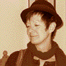

Christiane Bruley est née dans l’est de la France, vit depuis de nombreuses années en Bourgogne et a commencé à exposer ses peintures dans les années 90.
 © Bruley
En quelques phrases courtes, Christiane nous donne quelques pistes :
« … aime tripoter le bois, les papiers, cartons, métaux, la poudre de marbre, les sables …… aime la couleur, toutes les couleurs, le noir, le blanc … aime travailler en musique, toutes sortes de musiques selon l’état d’âme du moment : jazz, opéra, symphonies, rock, musiques tziganes…… aime les choses de travers, n’aime pas la symétrie, n’aime pas la simplicité…… aime courir, se fatiguer le corps et l’esprit…… aime encore ……»
Ce sont des espaces de jaune frayant avec les ocres, des rouges carmin adoucis d’orangés, des crèmes balayés de virgules bleutées. {…}
« C’est un carré d’un mètre sur un mètre qui remplit ma rétine. C’est du carton marouflé sur bois.L’ensemble est vif et lumineux. L’acrylique vous aspire en un tourment joyeux.
Ce sont des espaces de jaune frayant avec les ocres, des rouges carmin adoucis d’orangés, des crèmes balayés de virgules bleutées. La plage de couleur à mes yeux ébahis nous offre une sarabande de brosses mélangées. J’aimerais y voir une toile de bateau, peut-être à cause d’une ligne de partage entre le froid et le chaud. Ce ne sont que des pommes à l’avenir magnifié par une main d’artiste. Pommes, racines ou poivrons doux, écorces de bois, galets de Bretagne et vieux cadre vide signent l’univers de celle qui peint.
Univers, mouvements, quotidien balayé par des yeux bleus avides de couleurs, la peinture s’offre à nous dans la crudité nue d’une journée de printemps. »
Christine Camus, lors de l’installation Univers d’Artistes (Parc de la Colombière mai 2004)
Quelques dates d’expositions
Distinctions
Christiane BRULEY
21 rue Théodore de Bèze - 21000 DIJON
03 80 517 18 70 - 08 72 56 09 09 - chris_dijon@hotmail.com